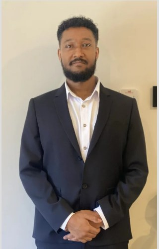
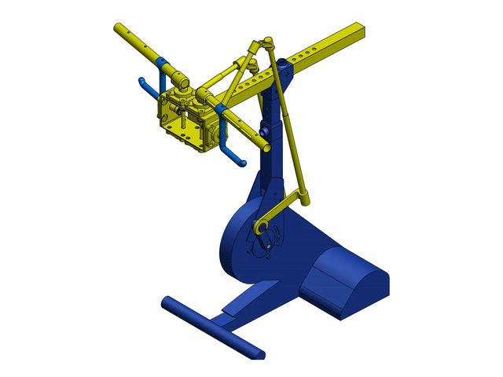
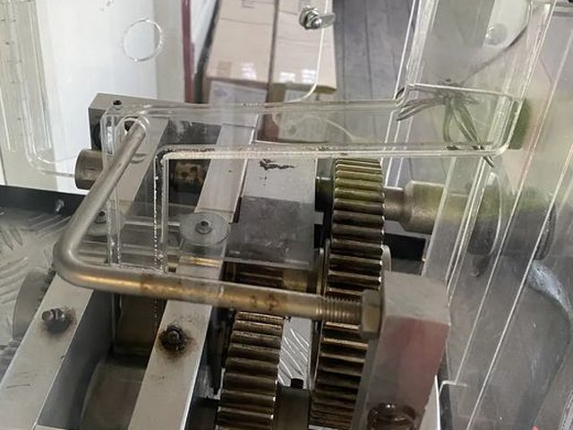

Portfolio Summary
Issey Siele
Mechanical Engineering (Honours) & Computer Science Student

Brisbane, QLD, Australia · issey.siele@griffithuni.edu.au · linkedin.com/in/isseysiele
I am a final-year Mechanical Engineering (Honours) and Computer Science student at Griffith University, graduating in July 2027, with a strong interest in mechanical systems, control, and engineering analysis. I have applied that interest in industry: kinematic analysis of a rehabilitation device retrofit across eight configurations during a mechanical engineering internship, mechanical design and field service for souvenir penny press machines as an independent contractor, and, since July 2026, a construction cadetship with Binah on a residential project on the Gold Coast, covering estimating, project delivery and site engineering.
Education
Griffith University, Bachelor of Engineering (Honours) / Bachelor of Computer Science. Majors in Mechanical Engineering, and Data Science and Artificial Intelligence. Griffith Award for Academic Excellence, 2023. Expected completion July 2027.
Griffith University, Bachelor of Aviation, conferred May 2021. Flight training at Archerfield through the Pathfinder Pilot Certificate program.
Key Strengths
CAD Modelling
SolidWorks parts, assemblies, drawings and motion studies, including a simulation-ready rebuild of a supplied STEP model.
Python & Data Analysis
Processing and visualising data to support engineering evaluation and decision-making.
Kinematic Analysis
Motion studies, transmission angles and two-link inverse kinematics to evaluate mechanism behaviour.
Field Diagnosis & Repair
Finding and fixing faults on site, and drawing the replacement parts in SolidWorks.
Selected Projects
Case Study 01 · Internship, ACPHT BioSpine
RT300 Upper-Limb Retrofit Kinematic Analysis
Kinematic analysis of an arm-cycling retrofit for the RT300SL rehabilitation ergometer. I rebuilt the prototype as a simulation-ready SolidWorks model, ran motion studies on eight configurations, and mapped the handle motion to shoulder and elbow demand for three user sizes, and wrist demand for the large user. Crank length drove the stroke, from 108.6 to 291.5 mm, and only the 60.4 mm short crank kept the small user in reach through a full turn.
- Stroke from 108.6 to 291.5 mm across eight configurations; crank length the strongest control
- Only the 60.4 mm short crank fully reachable for the small user; 27.5% of the cycle out of reach at baseline
- Large user: the wrist was the only joint above its arm-crank benchmark, 39.4° against 23.4°

Case Study 02 · Contract, NoSense Entertainment
Penny Press Field Engineering
Contract work from August 2024 to July 2026 on souvenir penny press and medallion machines at six tourism venues in South East Queensland. Site surveys, fault diagnosis and repair, replacement parts with manufacturing drawings in SolidWorks, and an illustrated troubleshooting guide for the technician team.
- Replacement roller-shaft pin modelled in SolidWorks after a temporary fix on site
- Three sign letters taken from card templates to SolidWorks parts with manufacturing drawings, on the same day
- Troubleshooting guide with sections on the hopper, payment terminal, rollers, coin chute and gearbox
